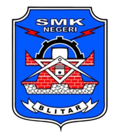

Arshavin Dega Nazaro
Siswa XI TJKT 1 | |
Tentang Saya

Selamat datang di portofolio digital saya. Nama saya Ega dari kelas XI TJKT 1 (No. Absen 10). Portofolio ini disusun sebagai wadah dokumentasi dan unjuk kerja atas kompetensi yang saya pelajari di bidang Teknik Jaringan Komputer dan Telekomunikasi, administrasi basis data, serta pemrograman.
26-November-2009
Blitar, Jawa Timur
0
Prestasi & Sertifikat
Database & MySQL
Java OOP
0
Riwayat Pendidikan
Riwayat Pendidikan

SMKN 1 Blitar
Teknik Jaringan Komputer dan Telekomunikasi (XI TJKT 1)Jl. Kenari No.30, Kelurahan Plosokerep, Kecamatan Sananwetan, Kota Blitar, Jawa Timur 66134
MTs Darussalam Kademangan
Pendidikan Menengah PertamaJL. BIMA NOMOR 27, Kec. Kademangan, Kab. Blitar, Prov. Jawa Timur
SDI Aisyiyah Suruhwadang
Pendidikan Sekolah DasarBlitar, Jawa Timur, Indonesia
Keahlian Teknis
Proyek Unggulan

Konfigurasi Jaringan & Subnetting /18
Simulasi perhitungan IP address dan pengaturan routing RIP antar router Cisco.
Networking
Manajemen Database SQL
Pengelolaan tabel MariaDB/MySQL via XAMPP, DDL/DML, dan phpMyAdmin.
Database
Website Portofolio Pribadi
Membangun website portofolio interaktif dengan HTML, CSS, dan JavaScript murni.
Web DevelopmentPrestasi & Sertifikat
Sertifikat Kompetensi Keahlian (Kompeten)
SMKN 1 Blitar & CV. FIA Sejahtera AbadiTelah mengikuti Uji Kompetensi Keahlian pada Kompetensi Keahlian Teknik Komputer dan Jaringan dengan predikat Kompeten.
Peraih Medali Perak Bidang Bahasa Inggris
Radar Science Competition (RSC) 2025Peringkat 6 dari 34 Peserta Jenjang SMP/MTs/Sederajat tingkat Nasional yang diselenggarakan oleh PT Pateron Edukasi Indonesia x Radar Blitar.
Peringkat 4 - Bidang Bahasa Inggris (SMA/SMK)
Blitar Olympiad of Science (BIOS) 2026Meraih Peringkat 4 dari 90 Peserta pada babak penyisihan olimpiade yang diselenggarakan oleh Pateron Indonesia.
Juara 4 Bahasa Inggris Level 4
Jenius Science Olympiad (JSO) 2025Atas prestasinya dalam Babak Penyisihan Jenius Science Olympiad yang diselenggarakan oleh Yayasan Intan Mutia.
Finalis Provinsi - Bahasa Inggris Level 4
Jenius Science Olympiad (JSO) 2025Menjadi Finalis Provinsi Jawa Timur pada ajang Jenius Science Olympiad (JSO) Tahun 2025.